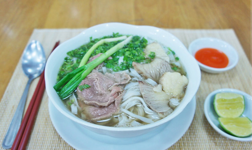

Phở Bò - Vì sao phở Việt đứng đầu món ngon nên thử?
Một điều thực sự đáng tự hào là món phở bò của Việt Nam đứng đầu danh sách 40 món ăn trên thế giới nên thử trong đời.
Trang Business Insider vừa đưa ra danh sách 40 món ăn ngon của thế giới mà chúng ta nên ăn thử một lần trong đời. Đáng tự hào là món phở bò của người Việt đứng đầu danh sách này.
Không phải tự dưng phở lại được một trang thông tin nước ngoài bình chọn là món ăn nên thử số 1 trong đời. Đằng sau mỗi tô phở ấy là những vị gia thơm ngon, những bí quyết gia truyền đầy hấp dẫn.
Phở là món ăn đặc trưng truyền thống trong ẩm thực của người Việt Nam. Phở xuất hiện mọi nơi, từ các nẻo đường làng quê cho đến các ngõ ngách thành phố, từ những quán ăn vỉa hè, quán bình dân, trong các nhà hàng sang trọng và trên cả những gánh hàng rong. Mọi người ăn phở như là một món ăn sáng hoặc cũng có thể ăn trưa, ăn chiều hay tối nhưng rất khó cảm thấy ngán bởi trong phở chứa đựng hương vị đặc biệt chẳng muốn rời.
vì sao pho viet dung dau mon ngon nen thu? - 1
Chẳng rõ chính xác phở có tự bao giờ, chỉ biết, một số giả thuyết cho rằng phở xuất hiện đầu tiên ở Nam Định, nhưng Hà Nội lại là nơi làm cho món ăn dân dã này trở nên nổi tiếng. Một số giả thuyết khác nhìn nhận phở như một đặc trưng ẩm thực Hà Thành, có lịch sử từ cuộc giao duyên Việt-Pháp đầu thế kỷ 20… Nhưng phở không chỉ khiến người Việt thích thú, biết bao người nước ngoài cũng say mê phở như chính những món ngon họ thưởng thức hàng ngày.
Phở không chỉ là món ăn mà bao người Việt thích thú, người nước ngoài họ cũng say mê phở như chính những món ăn họ thưởng thức hàng ngày
Người ta thích phở bởi cái thứ nước dùng thơm ngon và ngọt ngào kết hợp tinh túy của bao nhiêu nguyên liệu. Mùi phở đặc trưng đến nỗi bất cứ ai được thưởng thức một lần sẽ chẳng thể quên. Những sợi bánh phở nhỏ nhắn, dai dai, mềm mềm, trăng trắng như được ngấm đều bởi nước dùng. Sự thành công của người nấu chính là đã làm cho tất cả những nguyên liệu từ nước, bánh phở đến thịt, rau thơm đều hòa quyện với nhau làm một. Nếm một thứ người ta có thể hình dung được thứ kia tươi ngon đến nhường nào.
Mùa hè hay mùa đông, trong cái se lạnh của heo may tháng 8 hay trong cái nắng ấm áp của mùa xuân, người ta đều có thể ăn phở. Mỗi mùa hay từng thời điểm trong ngày, thưởng thức phở đều tạo nên những nét thú vị riêng, hương sắc riêng mà chỉ có những người mê phở mới cảm nhận được.
Nhà văn Thạch Lam đã từng viết về phở trong cuốn "Hà Nội băm sáu phố phường" với một thứ tình cảm ưu ái nhất:
"Phở là một thứ quà đặc biệt của Hà Nội, không phải chỉ riêng Hà Nội mới có, nhưng chính là vì chỉ ở Hà Nội mới ngon". Phở ngon phải là phở "cổ điển", nấu bằng thịt bò,"nước dùng trong và ngọt, bánh dẻo mà không nát, thịt mỡ gầu giòn chứ không dai, chanh ớt với hành tây đủ cả", "rau thơm tươi, hồ tiêu bắc, giọt chanh cốm gắt, lại điểm thêm một ít cà cuống, thoảng nhẹ như một nghi ngờ". Vào thời những năm 1940, phở đã rất phổ biến ở Hà Nội: "Đó là thứ quà ăn suốt ngày của tất cả các hạng người, nhất là công chức và thợ thuyền. Người ta ăn phở sáng, ăn phở trưa và ăn phở tối....".
Tuy món phở là món ăn ai cũng có thể nấu nhưng chẳng phải ai nấu cũng ngon. Phở ngon quan trọng nhất là nấu nước dùng. Thứ nước được nấu từ nước ninh của xương bò: xương cục, xương ống. Thịt dùng cho món phở có thể là bò, hoặc gà. Bánh phở phải mỏng và dai mềm, gia vị của phở là hành lá, hạt tiêu, giấm ớt, lát chanh thái.
Hương vị thơm ngon của nước dùng chủ yếu do các loại gia vị quyết định. Tuy nhiên, công thức của từng loại nước dùng cụ thể cho từng hiệu phở được giữ khá bí mật. Mặc dù vậy, có thể nhận thấy các loại gia vị này bao gồm thảo quả, gừng, hoa hồi, đinh hương, hạt ngò gai, quế thanh, hành khô, tôm nõn, địa sâm và theo truyền thống, không thể thiếu một cái đuôi bò.

Phở bò
Theo nhiều người sành phở cho rằng, Nam Định là nơi có bánh phở rất ngon. Phở Nam Định cũng có những đặc điểm chung như phở của các vùng khác là gồm bánh phở, nước phở, thịt bò hoặc thịt gà, và một số gia vị kèm theo, nhưng lại mang cái khác toàn diện mà khó có thể nhầm lẫn được. Bánh phở Nam Định là loại đặc biệt có sợi nhỏ ngon và mềm, khác với sợi bánh của vùng khác. Thịt bò được thái mỏng đập dập, nhúng và vớt trong khoảng thời gian phù hợp nên ăn mềm mà vẫn giữ được độ tươi ngon và dinh dưỡng của thịt... Và nếu nói đến nước thì thường mang tính "gia truyền" bởi những người thợ làm phở thường giấu kín bí quyết pha chế nước phở của mình và chỉ truyền cho thế hệ sau trong gia đình mà thôi.
Người Nam Định có thể hoàn toàn tự hào về món phở của họ cũng như người Việt tự hào về món phở nước mình với thế giới. Nhiều người Việt ra nước ngoài sinh sống, họ cũng đã mang niềm tự hào này đến với các thực khách trời Tây. Những quán phở Việt bây giờ chẳng còn xa lạ ở nước ngoài và nhanh chóng cuốn hút bất cứ ai thưởng thức.